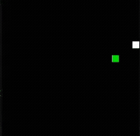
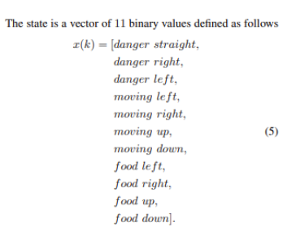
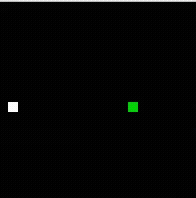
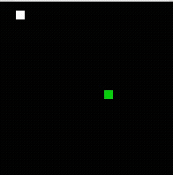
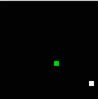

Reinforcement Learning Project
RL Snake
I reproduced a published Deep Q-Learning Snake agent, then improved the state representation and learning algorithm.

Project summary
I reproduced Sebastianelli et al.'s DQN-based Snake paper, found where the baseline struggled in practice, and then deliberately moved beyond the paper with a richer 27-dimensional state and Double DQN training.
Key technical contributions
- Reproduction of baseline (11D state) to validate original results and uncover failure modes (looping, self-trapping).
- Expanded state from ~11D to 27D including 8 directional raycasts (16 dims), 3 food-position dims, 4 one-hot heading dims, and 4 reachability/safety dims computed via bounded BFS.
- Upgraded learning to Double DQN with a separate target network, hard updates every 500 steps, replay buffer, and decaying epsilon schedule.
- Network architecture: 3 hidden layers x 512 units; outputs: 3 Q-values (straight, left, right).
Baseline reproduction
The original state representation used 11 binary-style inputs: immediate danger, food direction, and current movement direction. It was enough to learn basic food-seeking, but it did not let the agent reason about its own body, distant walls, or whether a move would trap it later.

The training journey
The baseline got visibly better over time, but its weakness stayed the same: as the snake grew, it would loop, corner itself, or take moves that looked good one step ahead and were fatal a few steps later. That is where I stopped strictly following the paper and expanded the state with raycasting and bounded BFS reachability.



Results
After adding 8-direction raycasting, food distance, reachability checks, and Double DQN, the best checkpoint came from episode 14,000.
- 50-game evaluation: Mean 62.4, Median 58, Max 98, Success rate (score at least 50): 68%.
- Result: exceeded the paper's reported best mean (56) using the 27D state + Double DQN improvements.
- Implementation lived in a compact Python stack: environment, Double DQN agent, training loop, plotting, and replay tools.
Engineering lessons
- Reproduction is valuable because it revealed implementation sensitivities and lower-than-reported baseline variance.
- Richer state representations (raycasting + reachability) can prevent shortsighted policies that lead to self-trapping.
- Double DQN reduces Q-overestimation and stabilizes learning in this domain.
Links
The reproduction code and training experiments are available on GitHub.